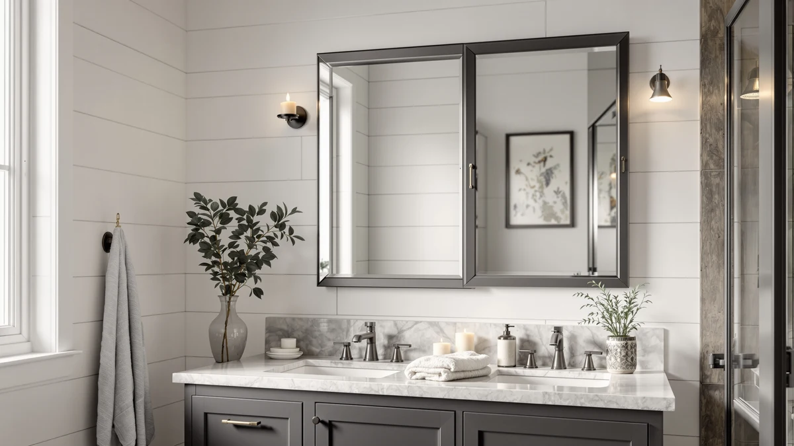

Best How to Install Bathroom Mirror (2026) | Best Bathroom Mirrors
Prices and picks verified as of August 2026. Independent, reader-supported reviews.


Things to Know Before You Buy
- Weight decides the hardware. Drywall anchors handle mirrors under about 20 pounds; anything heavier should catch at least one stud.
- Center the mirror at eye level, 57 to 65 inches from the floor, with the bottom edge 5 to 10 inches above the faucet.
- Brackets and cleats beat adhesive in a humid bathroom because they come off cleanly and hold their rated weight through steam cycles.
- Tile needs a $6 tile bit. A standard bit cracks glaze, so check what your drill will hit before you install a bathroom mirror over a backsplash.
You can learn how to install bathroom mirror hardware in a single afternoon with a drill, a level, and about $15 in anchors and screws. A 24 by 36 inch frameless mirror weighs 15 to 25 pounds, and bare drywall will not carry that weight for long. The difference between a mirror that stays put for a decade and one that ends up in pieces on the vanity comes down to which anchors you choose and where you put them.
This guide covers the standard bracket-and-anchor method, which works for framed mirrors, frameless mirrors with keyhole hangers, and LED mirrors up to about 40 pounds. The five steps run in strict order, from marking the wall to the final level check, and each one exists to protect the glass and the drywall behind it. Budget 45 minutes for a drywall installation, and add 20 minutes if the holes go through tile.
What You'll Need
- Supplies: drywall anchors rated for 30 pounds or more, #8 mounting screws, painter's tape
- Tools: power drill with a 1/8-inch bit, bubble level, stud finder, tape measure, pencil; the stud finder matters most when you install a bathroom mirror wider than 20 inches
Step 1: Mark the mirror position on the wall
Measure the width of your vanity and the width of your mirror, then find the centerline of the sink and mark it on the wall with a pencil. Center the mirror on that line, not on the vanity, because an off-center faucet reads as a mistake every morning you stand at the sink. For height, put the center of the mirror between 57 and 65 inches from the floor, with the bottom edge 5 to 10 inches above the faucet.
Outline the full footprint with painter's tape before you commit to drilling. The tape gives you a life-size preview, and stepping back to check it takes two minutes. Installing a bathroom mirror one inch too low is the kind of error you notice for years, so move the tape until the position looks right from the doorway and from the sink.
Step 2: Find the studs and mark your anchor points
Run a stud finder across the area inside your tape outline and mark each stud edge with a pencil. Studs sit 16 inches apart in most US homes, so a mirror wider than 20 inches usually crosses at least one. Screwing into a stud gives you far more holding power than any drywall anchor, so use one whenever the layout allows.
Now transfer the mounting points. Hold the bracket, cleat, or the mirror's keyhole hangers against the wall at your marked height and mark each screw hole. Measure the distance between hangers on the back of the mirror twice before you mark, because a quarter-inch error here means crooked or unusable holes. This is the stage of a bathroom mirror installation where patience pays off most.
Step 3: Drill the holes and set the anchors
Drill a pilot hole at each mark. For stud locations, a 1/8-inch bit works. For bare drywall, match the bit size printed on your anchor packaging, drill straight in, and stop as soon as the bit breaks through. Angled holes let anchors wobble, and a wobbling anchor loosens a little more each time the bathroom door slams.
Set your anchors next. Self-drilling anchors screw straight into drywall, while toggle bolts need a larger hole but hold 40 pounds or more each, which makes them the safer choice for mirrors over 20 pounds. Tap or turn each anchor until it sits flush with the wall surface. If the drywall crumbles around a hole, shift the anchor an inch to the side and patch the first attempt later; a bathroom mirror install on damaged drywall fails from the anchor outward.
Step 4: Screw the mounting brackets to the wall
Drive a screw through each bracket into its anchor or stud, but leave everything a half-turn loose at first. Set your bubble level across the brackets and adjust until the bubble sits dead center. Bathroom floors and vanity tops often run slightly out of level, so trust the tool, not your eye, when installing your bathroom mirror hardware.
Once the brackets read level, tighten each screw until it sits snug against the metal. Stop there. Overtightening cracks drywall, strips anchors, and can pull a bracket out of alignment. Give each bracket a firm downward tug when you finish; if anything shifts under your hand, the mirror will shift too, and now is the time to find out.
Step 5: Hang the mirror and check the level
Lift the mirror with both hands, or recruit a helper for anything over 24 inches wide, and lower it onto the brackets until you feel it seat. Keyhole hangers slide down over the screw heads, while J-brackets and cleats catch the frame or the bottom edge directly. Don't force it. If the mirror resists, a bracket sits off by a fraction, and forcing the glass risks a crack at the edge.
Set the level on top of the mirror for a final check, then press each corner lightly to confirm the glass sits flat against the wall. Keep a hand on it for ten seconds before you step away. A correct bathroom mirror installation feels solid at each corner, with no rock, tilt, or gap, and it stays that way through years of steam and slammed doors.
Common Mistakes to Avoid
The most expensive mistake when you install a bathroom mirror is trusting a bare screw in drywall. A screw without an anchor holds a few pounds at best, and humidity softens the gypsum around it month after month. The mirror hangs fine in July and lands on the faucet in December. Use rated anchors or a stud for anything heavier than a hand towel, and treat the weight printed on the anchor box as a ceiling, not a target.
Height errors come second. A mirror centered for the tallest person in the house leaves everyone else looking at their own forehead, so center it 57 to 65 inches from the floor and split the difference between users. Skipping the level ranks close behind. A mirror that sits a quarter bubble off looks fine on installation day and crooked in photos afterward, because the eye compares it against the tile lines and the vanity edge.
Two more to avoid. Drilling tile with a standard bit cracks the glaze; buy a $6 carbide or diamond tile bit and start the hole on a strip of painter's tape so the bit can't skate. And don't lift a wide mirror alone. Glass flexes more than it appears to, and a 36-inch mirror gripped at both ends by one person can crack from its own weight in the middle.
Our Top Picks
If the mirror itself is the missing piece, these three earn a spot on the wall you are about to prep. Each ships with keyhole hangers or brackets that match the steps above, so you can install a bathroom mirror from this list without a second hardware run.

Editor's Pick
Keonjinn 16 x 24 Inch
The 16 by 24 inch size keeps the weight low enough for drywall anchors alone, and one person can hang it without a helper.
$49.99
Check Price on Amazon
Best Value
InfiniGlass 42"x24" LED Bathroom Mirror
A 42 by 24 inch LED mirror that covers a double vanity for under $100; its width means you should catch a stud and bring a second pair of hands for Step 5.
$92.77
Check Price on Amazon
Premium Choice
ZLOKLA 9" Wall Mounted Lighted
A 9 inch lighted makeup mirror that mounts with two small anchors, a ten-minute version of this installation that adds task lighting beside your main mirror.
$49.99
Check Price on AmazonFrequently Asked Questions
How high should I install a bathroom mirror?
Center the mirror 57 to 65 inches from the floor, which puts the middle at eye level for most adults, and keep the bottom edge 5 to 10 inches above the faucet. In a household with a big height spread, split the difference. A taller mirror covers more range, which solves the argument better than moving it.
Can I install a bathroom mirror on drywall without hitting a stud?
Yes, up to a point. Quality self-drilling anchors hold 25 to 40 pounds each and toggle bolts hold more, so a pair supports most mirrors under 30 pounds. Above that weight, or for a mirror wider than 36 inches, catch at least one stud. Humid drywall loses strength over time, and studs do not.
Do I need special tools to install a mirror over tile?
One tool changes: swap your standard drill bit for a carbide or diamond tile bit, which costs about $6. Put painter's tape over the drill spot so the bit does not skate, drill slowly with light pressure, and let the bit do the work. Everything after the hole follows the same five steps.
How much does it cost to install a bathroom mirror yourself?
Plan on $10 to $20 if you already own a drill. Anchors run $5 to $10, a tile bit adds $6 if you need one, and painter's tape costs a few dollars. A handyman charges $50 to $150 for the same 45 minutes of work, which makes this one of the better DIY trades in the bathroom.
Can I use adhesive instead of screws to mount a bathroom mirror?
Mirror adhesive works for frameless glass glued directly to the wall, but it is a permanent choice, and removing the mirror later usually tears the drywall face with it. Brackets and anchors hold comparable weight, come off cleanly, and let you adjust the position. Choose adhesive only when you want a built-in look and accept the commitment.
Verdict
Once you know how to install bathroom mirror hardware properly, the job takes about 45 minutes and $15 in parts. The sequence matters more than the tools: mark the position with tape, find your studs, drill straight pilot holes, level the brackets before tightening, and seat the mirror gently. Each step protects the one after it, and the level check in Step 4 is the single best predictor of how the finished wall looks.
Match the hardware to the weight. Anchors alone handle a light mirror such as the 16 by 24 inch Keonjinn, our top pick at $49.99, while a 42-inch double-vanity mirror needs a stud and a helper. If your wall is tile, budget an extra $6 for a tile bit and an extra 20 minutes of slow drilling. Double-check the height against the tallest and shortest users before the first hole, because holes are the one part of this project a screwdriver cannot undo.